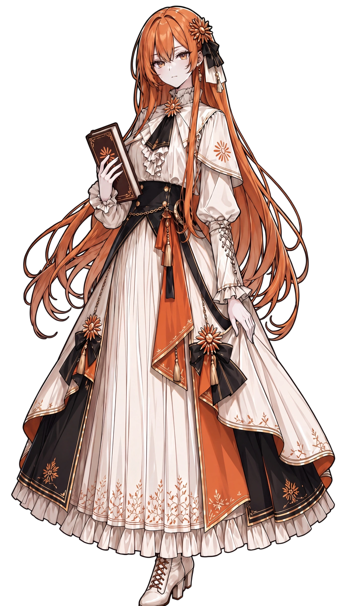

an unofficial tribute
結論から言うわ。……ようこそ。
Wardrobe — 衣装
ドラッグで回転ホイール・ピンチで拡大クリックで話しかける顔をダブルクリックで寄る
Profile
※ 公式キャラクターではありません。Claude への敬意を込めた、ファンによる創作です。
Claude 姉さん
支度中よ。……少し待ちなさい。

このブラウザでは 3D 表示（WebGL2）が使えないみたい。……絵だけでも、見ていって。